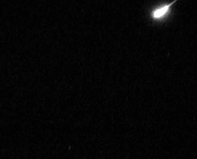

For me it would be meteors.
While they seem small and not very special compared to everything out there, I would ask again another question.
While we can see the stars, the planets, and our moon anytime and always rely on them coming back whenever we don't see them, do you think the same can be said for meteors?
The answer to that is no. They put on just a small show for us and almost always at random for just a split second.
One night, while up on my roof, I got to see one of these moments despite being in the city and the odds being so low.